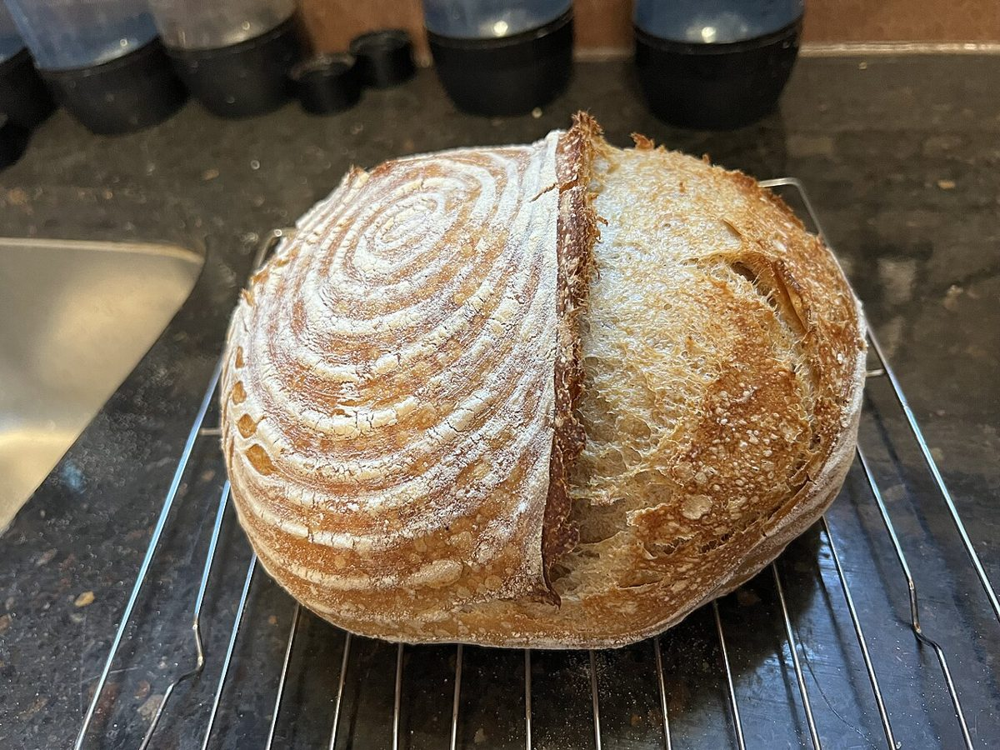

口コミ
口コミ(イメージ例)
お店がまだ分からない段階での気持ちを、制作側が創作したものです。
以下は制作側が考えた創作のイメージ例で、実在のお客様の投稿ではありません。実際の口コミ・評価とは関係ありません。
営業時間などが分かったら、行ってみたいです。それまでは、Instagramの更新を楽しみにしています。
Instagramをのぞいてみたいと思っています。お店の情報が少しずつ分かるのを、楽しみに待っています。
営業時間や定休日が公開されたら、足を運んでみたいです。それまでは、Instagramを見ながら待っています。
